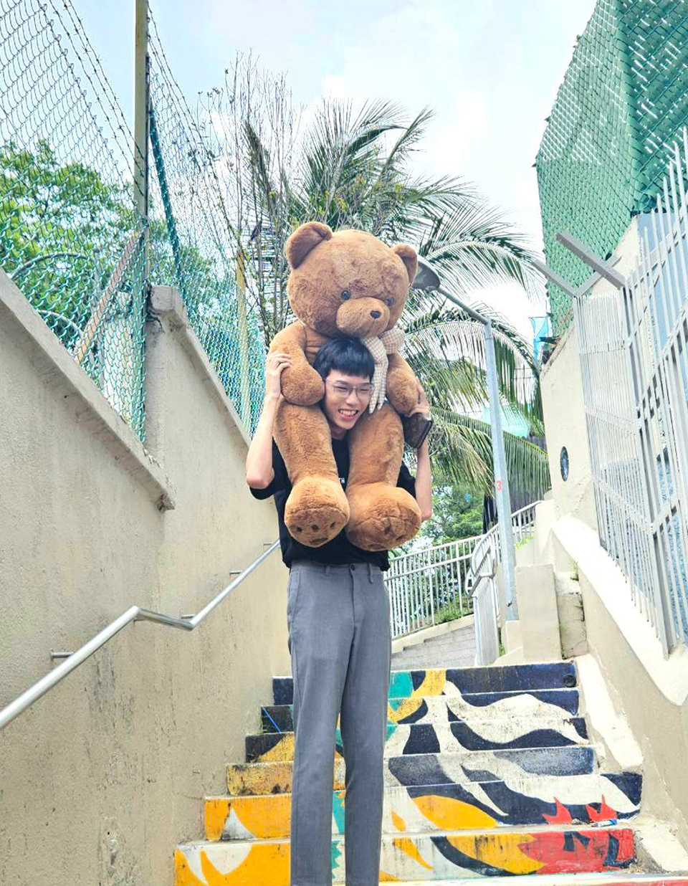

Casey Low
Computing Undergraduate
National University of Singapore
About Me
I am a second-year undergraduate student pursuing a Computing degree in Information Security at the National University of Singapore. Passionate about technology and its ability to solve real-world problems, I am constantly exploring innovative solutions and embracing new challenges. My interests lie in cybersecurity, social engineering, and networking, where I seek to deepen my knowledge and expertise. Beyond academics, I am a strong advocate for diversity and inclusion in the tech industry, striving to create an environment where everyone has the opportunity to thrive and contribute.
Experience
-
Technology Associate Intern, 5G Garage – SingTel
Sep 2020 – Feb 2021
- Tested 5G Customer-Premises Equipment (CPE) from suppliers for integration into workflows.
- Troubleshot and resolved network/radio issues to maintain 1–10ms ping and 2 Gbps throughput.
- Collaborated with 10+ vendors to integrate 5G capabilities and improve software stability.
- Presented and supported execution of public workshops, showcasing 5G technology before commercial rollout.
- Authored a white paper introducing 5G architecture and applications of ML/AI with CPU and GPU technologies.
-
Customer Service Assistant – Cat & The Fiddle
Nov 2017 – Apr 2018
- Managed customer queries via phone/email with prompt and effective resolution.
- Handled order preparation, packing, and self-collection services with accuracy.
- Provided retail service, recommending products and assisting customers in-store.
Skills
Python
Java
C++
C
SQL
Dash
HTML
CSS
JavaScript
Git
Linux
Flutter
Network Security
Penetration Testing
Problem-Solving
Teamwork
Communication
Photoshop
Premiere Pro
Alma Mater